ShufyTheme WHMCS Documentation file
By coodiv team
Introduction
It became evident that there exists a considerable monopoly within the WHMCS themes and add-ons marketplace.
We observed that numerous WHMCS users are encountering challenges when seeking an appropriate theme that aligns with their brand identity.
In response to this pressing need, we embarked on the development journey of ShufyTheme.
ShufyTheme stands out as one of the most comprehensive and user-friendly WHMCS themes available on the market today. Our aim with ShufyTheme is to provide WHMCS users with a seamless and visually appealing solution that not only meets but exceeds their expectations. By incorporating cutting-edge design elements and robust functionality, ShufyTheme aims to revolutionize the WHMCS user experience, empowering businesses to showcase their brands effectively and effortlessly.
Before Getting Started
This documentation is designed to assist you with every step of the installation and customization process. Please carefully review the documentation to gain a thorough understanding of how this theme operates and how to customize it effectively.
We strongly recommend that you familiarize yourself with this documentation. Investing just half an hour in reading the manual can save you a significant amount of time and prevent unnecessary questions with obvious answers.
If you have any questions that are not covered in this help file, please don't hesitate to contact us via email through The Item Support Page
or reach out to our dedicated support team for assistance.
Installation
This guide will lead you step-by-step through the process of installing Shufytheme on your server. We'll provide detailed instructions to ensure a smooth installation experience from start to finish.
1. ShufyTheme Requirements
- IonCube Loader: 10.x and later
- PHP: Version 7.2 and later
- WHMCS system: Before installing Shufytheme, you must install WHMCS.
2. Check your version
- Check your WHMCS version: Before starting the installation, you need to verify if ShufyTheme is compatible with your WHMCS version.
- Prepare your Purchase Code: You need to obtain your Purchase Code from ThemeForest because we will need it during the installation process. Read this article if you're unsure how to get it.
3. Download the latest version of ShufyTheme
- Log into your Envato Market account.
- Hover the mouse over your username at the top of the screen.
- Click ‘Downloads’ from the drop-down menu.
- Click 'Download' next to "ShufyTheme" icon to download the latest version of the theme.
4. Upload ShufyTheme to your server
- Extract the
shufytheme_package_themeforest_X.X.Xfolder that has been downloaded from ThemeForst. - Inside that folder you will find
Upload.zipFolder - Get your WHMCS system installation directory in WHMCS admin area. Go to "Help" > "License Information" > "Valid Directory".
- Upload content of
Upload.zipfolder to using FTP server, to the directory where your WHMCS system is installed. - Ensure that all files are uploaded correctly during the upload process, without encountering any errors.
5. Install ShufyTheme Addon
- Login to your WHMCS admin area.
- In the top right corner, click on
System Settingsthen selectAddon Modules.
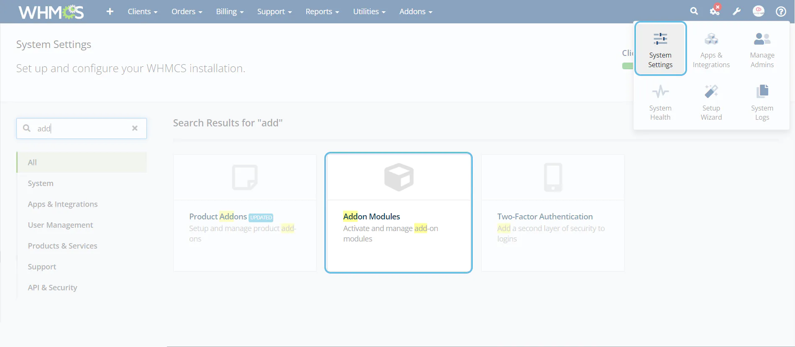
- Activate
Shufy Theme Control Panel by coodivaddon.
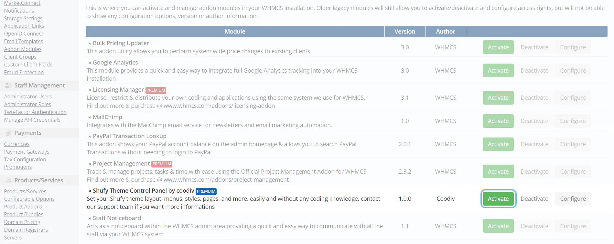
- Click the
Configurebutton, then select the admin role groups to grant access according to your requirements, and finally, save your changes.
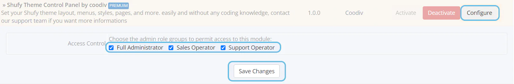
{kind=link}
{kind=link}
{kind=link}
6. Activate ShufyTheme Theme and orderform template
- In the top right corner, click on
System Settingsthen selectGeneral Settings.
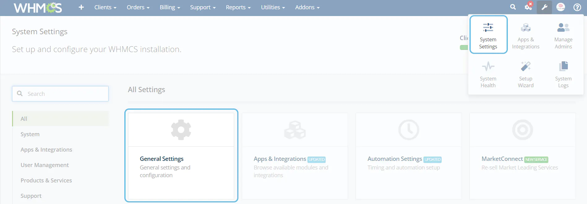
- In General tab select
ShufyThemefrom System Theme dropdown and click on Save Changes.
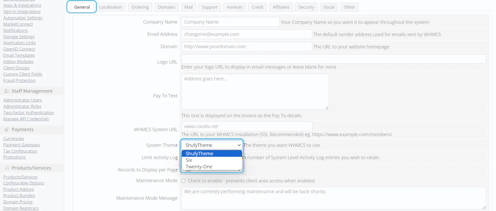
- In Ordering tab select
Shyfytheme CartDefault Order Form Template and click on Save Changes.
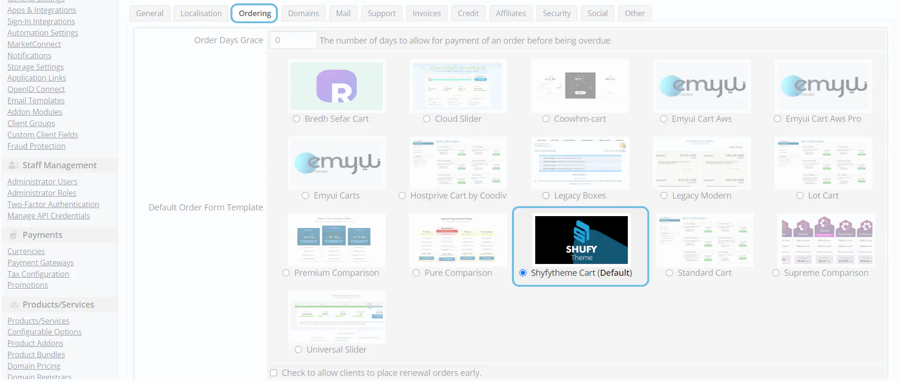
{kind=link}
{kind=link}
{kind=link}
7. Activate ShufyTheme Addon
- Go to
Addonsthen clickShufy Theme Control Panel by coodivin the navigation menu of your WHMCS admin area.
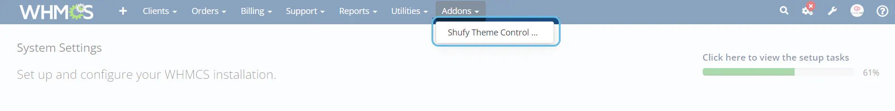
- Entre your
Purchase Codethen clickVerify Purchase. Read this article if you're unsure how to get the Purchase Code.
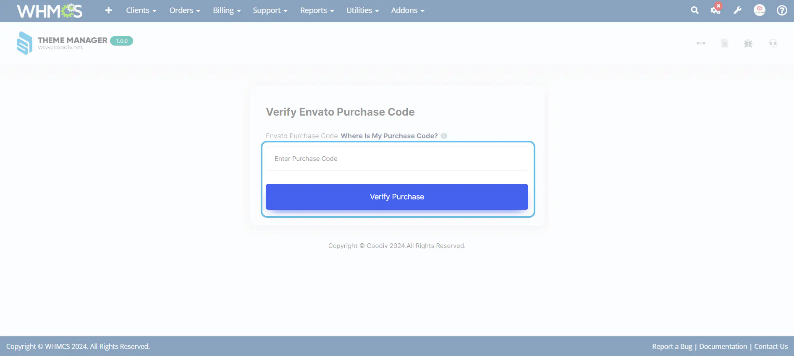
{kind=link}
{kind=link}
Updating ShufyTheme
In this guide, you will learn how to effectively update ShufyTheme. We will provide a step-by-step walkthrough of the entire update process.
1. Download the latest vesion
- Log into your Envato Market account.
- Hover the mouse over your username at the top of the screen.
- Click ‘Downloads’ from the drop-down menu.
- Click 'Download' next to "ShufyTheme" icon to download the latest version of the theme.
2. Upload ShufyTheme update files to your server
- Ensure that you save a backup from your theme, which you would like to update.
- Use the right folder to update
ShufyThemefrom the downloaded package from ThemeForest, ex: you are using 8.9 and you want to update to 8.10.1, you just need to use the content of update from 8.9 to 8.10.1 folder
3. Updating ShufyTheme Control Panel by coodiv
- Ensure that you save a backup from your settings, Read how to export and import options
- Upload the new
ShufyThemetomodules\addonspath
4. Clear Cache
- Clear your browser and server cache for example Cloudflare
- Clear the WHMCS template cache in: Utilities > System > System Cleanup > “Go” > “Empty Template Cache”.
Configure your theme
We've elevated the WHMCS option panel with the ShufyTheme Control Panel, making theme configuration easier than ever before. With our intuitive control panel, you can effortlessly customize various aspects of your theme. From editing colors, layouts, menus, footer and sidebar layouts, login and register layouts, to SEO management and typography control, ShufyTheme offers an extensive array of customization options to suit your needs.
1. Logo & Site Identity
You can use the default Shufytheme logo, add your custom logo link, or even if you don't have a logo, you can still use the text logo option.
- Use Site Name as Logo (text) Check this option if you want to display your website name as a logo
- Custom text logo Fill in this input to Use Site Name as Logo and use custom text instead of your original website name.
- Your default logo icon URL Add your icon URL and most be a 1:1 aspect ratio
- Your default logo tagline add your logo URL and most be without icon
- Your Full logo link URL add here your full logo URL
{kind=link}
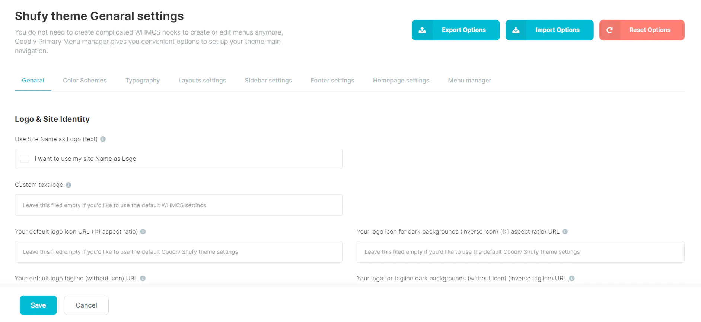
2. Genaral settings
You can use the default Shufytheme logo, add your custom logo link, or even if you don't have a logo, you can still use the text logo option.
- Customer Support PIN With ShufyTheme you can use Customer Support PIN
- Delete notification when close it You can hide all Customers notifications after close it for the first time
- Slider mode in product page in these fields, you can configure the slider mode in the product page
- Gravatar tick/enable this field to display Gravatar as profile picture for your customers.
- Header anoncements tick/enable this field to display header anoncement slider
- Header dropdowns You can choose if you want dropdowns to shows as a sidebar or a simple dropdown
- Marketconnect Bannaers These fields are for displaying ShufyTheme MarketConnect banners
- Login & register page styles You can choose from various login and register page styles
- Cookies Box settings You can configure your cookies box position, contents and more
- Language dropdown placements You can choose where you want to display your language dropdown
{kind=link}
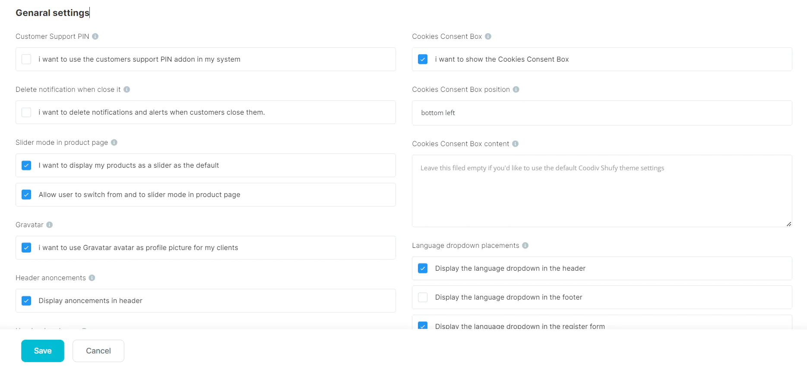
3. SEO Tools
ShufyTheme is equipped with built-in SEO enhancements. With each new version, we endeavor to enhance the SEO capabilities of our products, ensuring your website not only looks great but also performs well in search engine rankings.
- Website Name A name that Google may use for your homepage search results. This will default to the WHMCS site title if left blank.
- Website description An alternate website description for your site.
- Organization Name Add your Organization Name to this filed.
- Contact Type Select Which Contact Type you are using in your website.
- Twitter username Add your twitter username with @.
- Alternate Website Name An alternate name for your site. This could be an acronym or shorter version of your website name.
- Website Type Select which department are your website belongs to
- Organization Phone Number Add your Organization Phone Number to this filed.
- Default open Graph Image ADD Default open Graph Image URL for facebook and twitter links
- Website custom shortcut icon Add your custom shortcut icon and sould be 1:1 and .ico link
{kind=link}
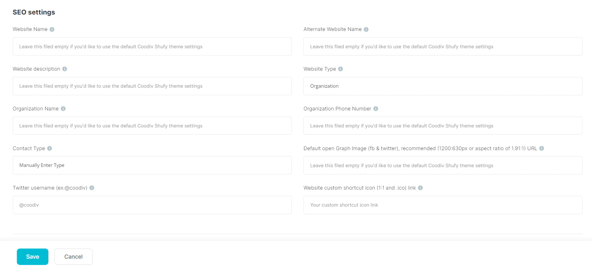
4. Custom CSS code
Empower your customization by effortlessly adding your custom CSS code via the ShufyTheme Control Panel, bypassing the necessity of editing any theme files.
{kind=link}
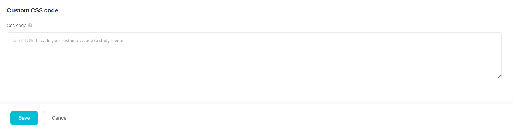
Colors Manager
Revamp your theme customization experience with a selection of 4 pre-made styles and an extensive palette of over 160 color options for each style. Absolutely no coding expertise required!
- 4 Color Schemes : Choose from 4 pre-made color schemes.
- Colors options : More than 160 options for each color scheme, totaling over 640 color options to manage.
1. Color Schemes
{kind=link}
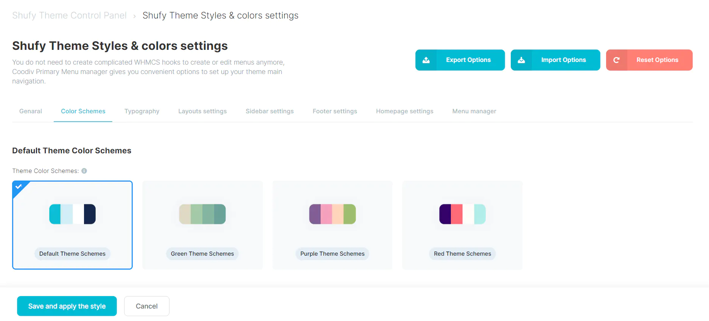
You can select from 4 pre-made color schemes. Feel free to choose a pre-made scheme or customize one to establish your brand colors. You can activate your chosen scheme by following these steps:
- Go to the
Shufy Theme Styles & colors settingstab in Shufy Theme Control Panel. - Choose the
Color Scheme, which you want to use, for example Purple Theme Schemes. - Click
Save and apply the styleat the bottom of the screen.
2. Color Variables
{kind=link}
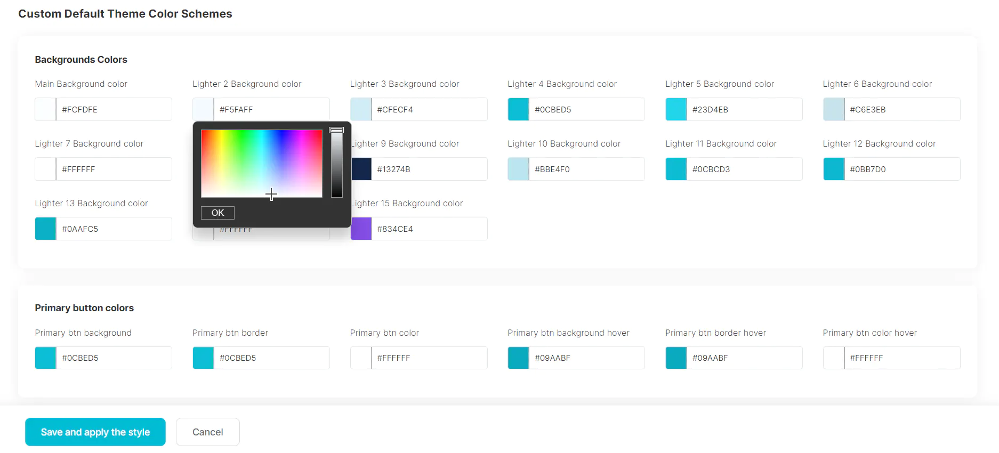
If the pre-made color schemes don't match your brand, you can begin editing the color schemes of every theme element using the Custom Theme Color Schemes section.
- Backgrounds Colors The default ShufyTheme Backgrounds schemes
- Primary button colors Primary button color schemes (background, colors, border, hover .. etc)
- Primary Light button colors Primary Light button color schemes (background, colors, border, hover .. etc)
- Default button colors Default button color schemes (background, colors, border, hover .. etc)
- Primary outline button colors Primary outline color schemes (background, colors, border, hover .. etc)
- primary outline white button colors primary outline white button color schemes (background, colors, border, hover .. etc)
- Primary outline light button colors Primary outline light button color schemes (background, colors, border, hover .. etc)
- light button colors light button color schemes (background, colors, border, hover .. etc)
- lighter button colors Ligter button color schemes (background, colors, border, hover .. etc)
- Texts Colors Headings, Texts, Borders, Tags Colors & More ...
- Sidebar colors Schemes More than 15 color options for default Sidebar
- Dark Sidebar colors Schemes More than 15 color options for Dark Sidebar
- Primary alerts, Badges & status colors Edit the primary alerts, badge, status default background and colors
- Secondary alerts, Badges & status colors Edit the secondary alerts, badge, status default background and colors
- Success alerts, Badges & status colors Edit the success alerts, badge, status default background and colors
- Danger alerts, Badges & status colors Edit the danger alerts, badge, status default background and colors
- Warning alerts, Badges & status colors Edit the warning alerts, badge, status default background and colors
- Info alerts, Badges & status colors Edit the info alerts, badge, status default background and colors
- Light alerts, Badges & status colors Edit the light alerts, badge, status default background and colors
- Dark alerts, Badges & status colors Edit the dark alerts, badge, status default background and colors
Typography settings
Shufytheme options panel gives you the power to choose from multiple Font Family and customize the font sizes on your website.
- Font Family settings : Allows you to change "Font Family" used in Shufytheme without any cooding knowladge.
- Font Sizing settings : You have complete autonomy to adjust font sizes for both Desktop and Mobile screens.
1. Font Family settings
{kind=link}
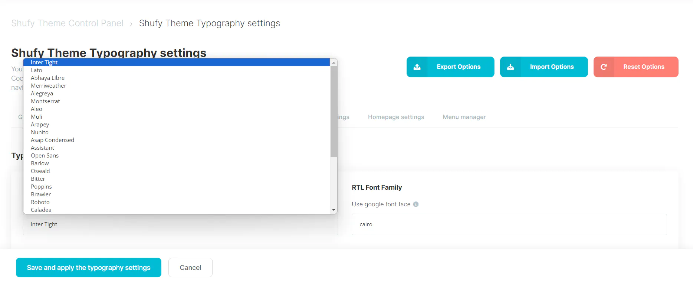
In this section you can choose from a large variant of google font To use in your website
- Dafault Font Family The default font family for your website
- RTL Font Family The RTL font family for your website
2. Font Sizing settings
{kind=link}
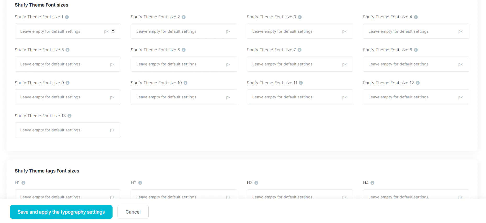
The ShufyTheme control panel gives you the ability to adjust font sizes for both Desktop and Mobile screens with over 22 options available.
- Shufy Theme Font size 1 The default font size for
coodiv-text-1class - Shufy Theme Font size 2 The default font size for
coodiv-text-1class - Shufy Theme Font size 3 The default font size for
coodiv-text-3class - Shufy Theme Font size 4 The default font size for
coodiv-text-4class - Shufy Theme Font size 5 The default font size for
coodiv-text-5class - Shufy Theme Font size 6 The default font size for
coodiv-text-6class - Shufy Theme Font size 7 The default font size for
coodiv-text-7class - Shufy Theme Font size 8 The default font size for
coodiv-text-8class - Shufy Theme Font size 9 The default font size for
coodiv-text-9class - Shufy Theme Font size 10 The default font size for
coodiv-text-10class - Shufy Theme Font size 11 The default font size for
coodiv-text-11class - Shufy Theme Font size 12 The default font size for
coodiv-text-12class - Shufy Theme Font size 13 The default font size for
coodiv-text-13class - H1 The default font size for
H1tag - H2 The default font size for
H2tag - H3 The default font size for
H3tag - H4 The default font size for
H4tag - H5 The default font size for
H5tag - H6 The default font size for
H6tag - P The default font size for
Ptag - BUTTON The default font size for
BUTTONtag - SMALL BUTTON The default font size for
SMALL BUTTONtag
Layouts Manager
Effortlessly customize the appearance of your WHMCS client portal with over 17 Pre-Layouts for your theme. The Shufytheme Layout Manager functionality provides you with complete freedom to define various layouts for the sidebar and top header elements.
- Sidebar Layouts : Easly change and customize your theme sidebar layout from 4 pre-made layouts.
- Sidebar position : Easly change and customize your theme sidebar position from 4 pre-made position.
- Logo position : Easly change your theme logo position from the sidebar to the top header.
{kind=link}
{kind=link}
3. Logo position
{kind=link}
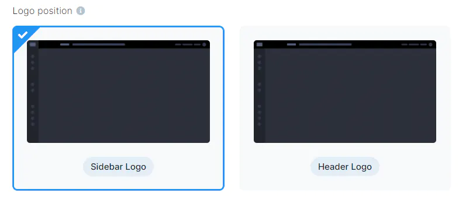
Easly change your theme logo position from the sidebar to the top header with the Shufytheme layouts Manager
- Sidebar Logo Add your logo to ShufyTheme sidebar
- Header Logo Add your logo to ShufyTheme Top header
{kind=link}
{kind=link}
{kind=link}
Homepage settings
The Shufytheme Homepage Settings offer a comprehensive suite of tools to tailor your website's front page to your precise specifications. Within this intuitive interface, you can effortlessly configure various elements to create a captivating and user-friendly homepage. From layout options to content customization, the Homepage Settings empower you to craft a dynamic and engaging entry point for your visitors.
- Homepage layouts We are working on new layouts for shufytheme and should be ready soon
- Homepage sections You have the ability to edit and customize all the content, links, colors, and more within each section of the homepage.
- Homepage featured services settings
- Homepage featured plans settings
- Homepage features boxes
- Homepage Saving banner & subscribing
- MailChimp options Set up your MailChimp mailing list subscription directly from the Shufytheme control panel.
1. Homepage layouts
{kind=link}
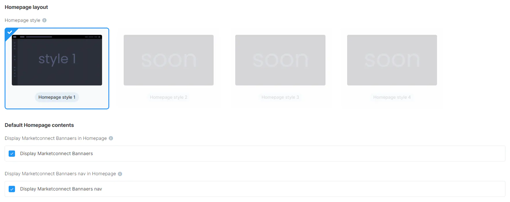
You can select the homepage layouts and customize which sections you want to display or remove using the Homepage Layouts settings.
- Marketconnect Bannaers Display Marketconnect Bannaers in Homepage
- Marketconnect Bannaers nav Display Marketconnect Bannaers nav in Homepage
- Announcements Display Announcements in the Homepage
2. Homepage featured services settings
{kind=link}
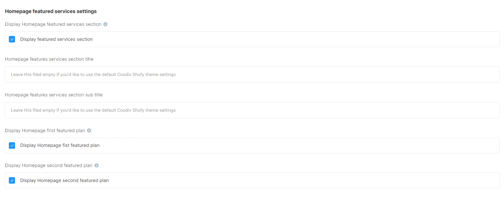
In this section, you'll discover an array of settings dedicated to configuring the Featured Services section of your website. From titles and subtitles to pricing links and beyond, you have the ability to fine-tune various aspects to align with your branding and messaging. Whether you're highlighting key offerings, showcasing product features, or promoting services, these settings empower you to create a compelling and informative section that resonates with your audience.
3. Homepage featured plans settings
{kind=link}
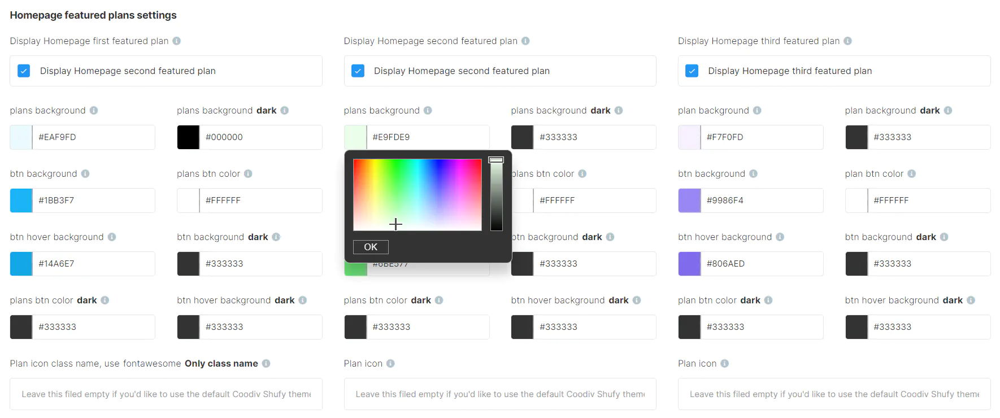
Within this section, you'll find a comprehensive array of customization options tailored specifically for the Homepage Featured Plans section. From adjusting titles and subtitles to fine-tuning colors, links, and pricing details, you have full control over every aspect of this prominent section. Whether you're showcasing subscription tiers, service packages, or product offerings, these customizable settings enable you to create an impactful and visually appealing display that effectively communicates your value proposition to your audience.
4. Homepage features boxes
{kind=link}
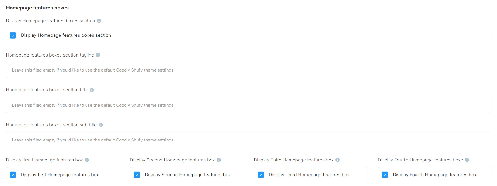
Within this interface, you have the capability to edit and personalize the Homepage Features Boxes section according to your preferences. This includes the ability to incorporate your own icons, titles, descriptions, and URLs, providing a tailored and informative showcase of key features or services offered on your website. Whether you're highlighting product features, service offerings, or key benefits, these customizable options empower you to craft a visually engaging and informative section that resonates with your audience.
{kind=link}
6. Setup your Mailchimp subscription list
- MailChimp API key To find your API, follow these steps.
- Click your profile name to expand the Account Panel and choose Account Settings
- Click the Extras menu and choose API keys.
- MailChimp unique audience ID To find your audience ID, follow these steps.
- Click Audience
- Click All contacts
- If you have more than one audience, click the Current audience drop-down and choose the one you want to work with.
- Click the Settings drop-down and choose Audience name and defaults.
- In the Audience ID section, you’ll see a string of letters and numbers. This is your audience ID.
- Mailchimp account data center you will find the data center in you api key, your-api-key-
usX
{kind=link}
{kind=link}
{kind=link}
{kind=link}
{kind=link}
Shufytheme control panel import, export and reset to default
The "Shufytheme Control Panel" function within this WHMCS addon offers comprehensive management capabilities for theme configurations. With this tool, users can effortlessly import, export, and reset theme settings to default values, streamlining the customization process.
With these features, you can efficiently tailor your theme experience to meet their specific needs and preferences.
1. Import settings
{kind=link}
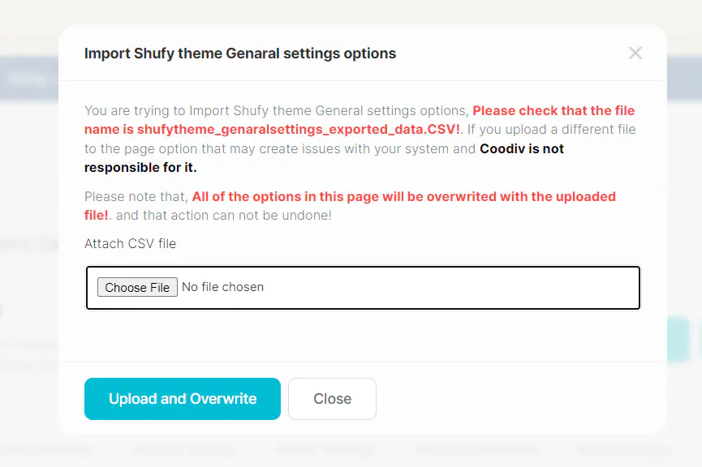
Seamlessly import pre-configured theme settings, simplifying setup and ensuring consistency across platforms.
2. Export settings
{kind=link}
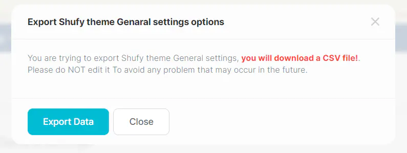
Easily export current theme configurations for backup or transfer purposes, providing peace of mind and flexibility.
3. Reset to Default
{kind=link}
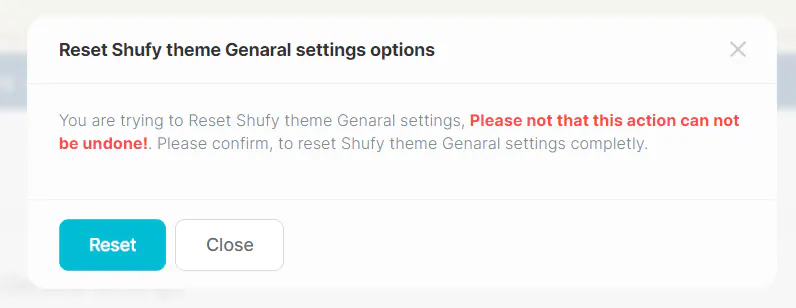
Instantly revert theme settings to their default state, offering a convenient option for troubleshooting or starting anew.
Common WHMCS issues
you fill find in this section common WHMCS issues and some suggestions to fix them
If you see an Oops error page like this indicates an error occurred during the generation of the page.
The error can be anything, from a simple notice or warning to a fatal error that halts execution.
Or you are installing the wrong theme version.
It's the PHP error reporting level on your server that determines which types of errors will trigger it.
If you find some error installing the theme like Missing main.css, white page or something similar, please:
- make sure you are uploading the correct file
WHMCS(X.X.X)/upload.zip. - make sure that you unpack the zip file after uploading to your server
- make sure that you are using the right version for your WHMCS
- make sure that you activate the template from your WHMCS admin panel
- make sure that the files has the right permission
Or probably has these issues in your server
- Syntax errors in custom modules, hooks or templates.
- Incompatible hooks or addons.
- PHP, Apache or Ioncube related errors.
- Missing or corrupted files / incomplete uploads.
- If the above suggestions do not solve please contact your hosting provider, or our support team will help you with your issue
Support
If this documentation doesn't answer your questions, So, Please send us Email via Item Support Page or coodiv support team
We are located in GMT+1 time zone and we answer all questions within 12-24 hours in weekdays.
In some rare cases the waiting time can be to 48 hours. (except holiday seasons which might take longer).
Don’t forget to Rate this theme
To leave a review, simply navigate to your Themeforest Profile, access the Downloads Tab, and you'll find the option to rate and review our theme.
Thank you for your time and support.
Changelog
See what's new added, changed, fixed, improved or updated in the latest versions.
For Future Updates Follow Us @themeforest / @facebook / @instagram
Version 1.1.0 (23/06/2024)
[ FIX ] Image and checkbox reCAPTCHA issues on domain register and transfer pages
templates/orderforms/shyfytheme_cart/domainregister.tpl
templates/orderforms/shyfytheme_cart/domaintransfer.tpl
templates/shufytheme/assets/css/app.min.css
templates/shufytheme/assets/css/app.rtl
Version 1.1.0 (20/06/2024)
[ FIX ] Searching for unavailable TLDs in domain register page issue
[ FIX ] the logo issues in the different layouts ( text & image )
[ FIX ] The announcement slider on the login and register page ( text height )
[ FIX ] password email rest not working
[ FIX ] affiliates number in the client area pages
[ FIX ] Using a domain already in the shopping cart to order new hosting on the mobile version
[ New ] Full Supporting for RTL layouts
[ New ] Affiliates page redesigned
[ New ] All of the Marketconnect pages has been improved to match the theme UI
[ New ] Activating the Arabic, Hebrew, and Farsi fonts and RTL mode from the admin panel
Version 1.0.1 (15/05/2024)
[ FIX ] license verification issue: modules/addons/shufyTheme/hooks.php
Version 1.0 (12/05/2024)
Initial Release